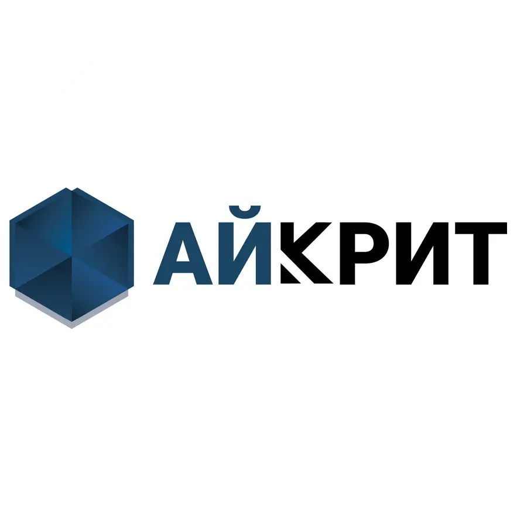

«Создаем цифровые решения для роста вашего бизнеса»
Разработка, внедрение и сопровождение программных продуктов «1С»

Разработка, внедрение и сопровождение программных продуктов «1С»
«Айкрит» — региональная IT-компания из Красноярска, специализирующаяся на внедрении и сопровождении программных продуктов «1С» для коммерческих организаций. Мы работаем на рынке автоматизации бизнеса с 2019 года и за это время зарекомендовали себя как надежный партнер для компаний из сферы торговли, услуг и производства.
Мы не просто продаем программное обеспечение — мы решаем задачи бизнеса. Каждый проект начинается с предварительного обследования процессов заказчика, что позволяет подобрать оптимальную конфигурацию и избежать лишних затрат. Мы сопровождаем клиента на всех этапах: от настройки системы и интеграций до обучения сотрудников и последующей технической поддержки.
Наша ключевая специализация — платформа «1С:Предприятие 8» и сопутствующие продукты:
«Айкрит» является официальным партнером фирмы «1С» и имеет статус «1С:Центр реальной автоматизации», что подтверждает соответствие высоким стандартам качества работы с клиентами. В штате компании — сертифицированные специалисты, в том числе обладатели статусов «1С:Специалист» и «1С:Профессионал».
Среди наших клиентов — компании из сферы торговли, услуг и производства. Мы реализовали проекты для ООО «Траст-Инвест» (автоматизация заказов и интеграция сайта с 1С), ООО «Алпрофсити» (внедрение «1С:Управление нашей фирмой»), ООО «Промснаб 2000» (автоматизация зарплаты и управления персоналом), а также для компаний, работающих с маркированной продукцией.
Мы гордимся тем, что клиенты доверяют нам автоматизацию своих ключевых процессов, и продолжаем развивать экспертизу, чтобы предлагать решения, которые действительно работают.